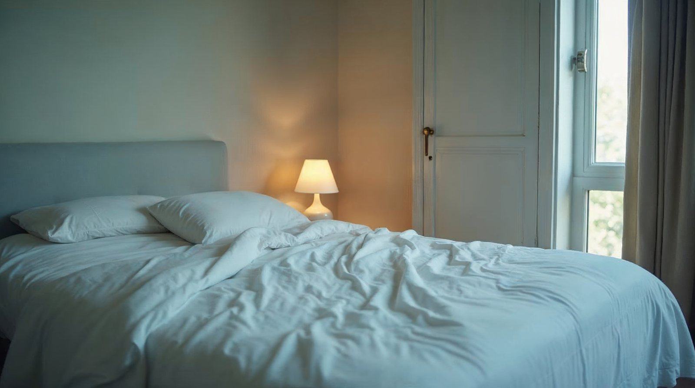
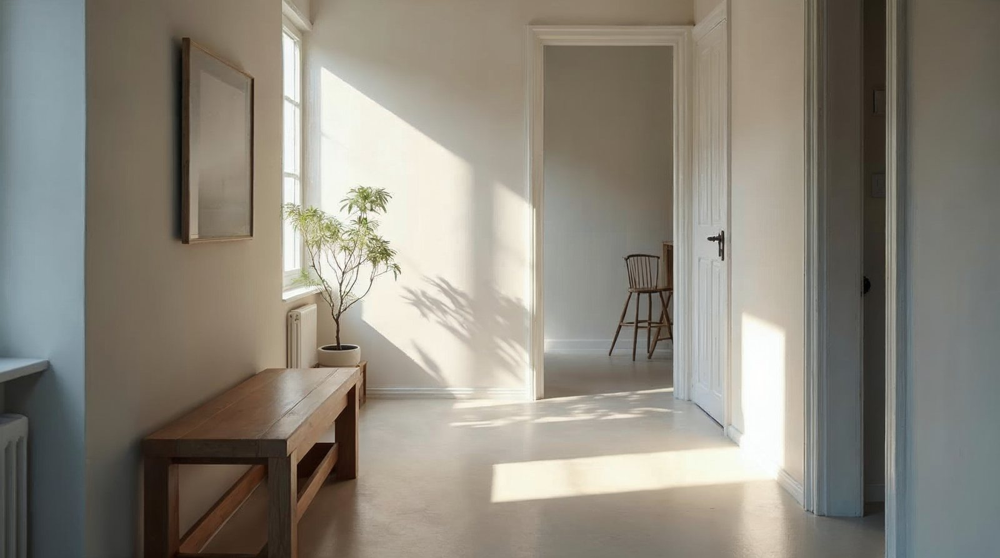
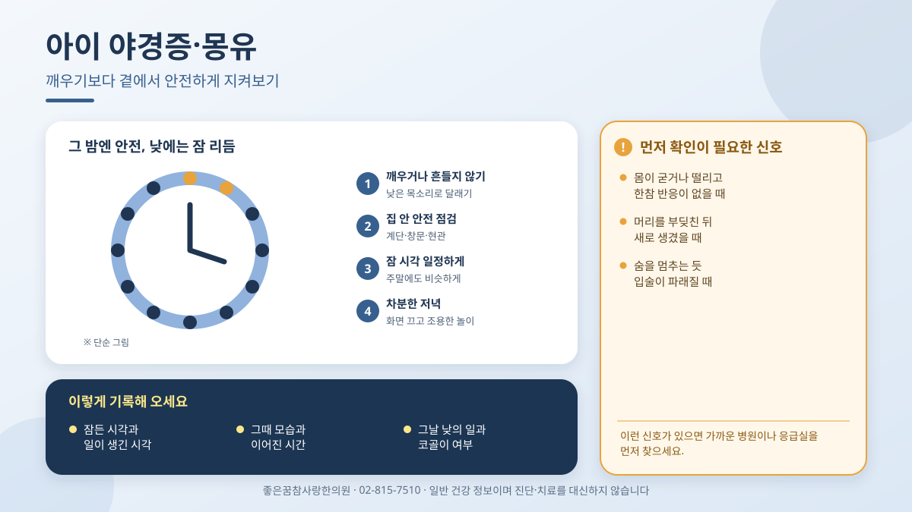

이종호 한의사 감수좋은꿈참사랑한의원 대표원장 (한의사 면허번호 19769)발행 2026-11-26 · 수정 2026-11-26
이 글의 차례
아이를 재우고 거실에서 한숨 돌리던 밤, 아이 방에서 날카로운 비명이 들립니다. 달려가 보니 아이가 침대에 앉아 눈을 크게 뜬 채 소리를 지르고 있습니다. 땀에 젖은 얼굴로 허공을 밀어내듯 팔을 휘젓는데, 이름을 불러도 엄마를 알아보지 못합니다. 몇 분 뒤 아이는 아무 일 없었다는 듯 다시 누워 잠이 듭니다.
다음 날 아침 아이에게 물어보면 아무것도 기억하지 못합니다. 오히려 놀란 것은 부모뿐입니다. 진료실에서 이 이야기를 꺼내시는 부모님 얼굴에는 밤새 다시 그럴까 봐 잠을 설친 흔적이 그대로 남아 있습니다.
자다가 일어나 집 안을 돌아다니거나, 현관문 쪽으로 걸어가는 아이를 보고 놀라 오시는 분도 계십니다. 이런 모습은 흔히 야경증과 몽유, 우리말로 잠결 걷기라고 부르는 상태입니다. 이 글에서는 이 두 가지가 어떤 것인지, 그 밤에 부모가 무엇을 하면 좋은지 정리해 보겠습니다.
야경증과 몽유는 어떤 모습인가요
야경증은 아이가 잠든 지 한두 시간쯤 지나 갑자기 소리를 지르거나 울며 깨어나는 것처럼 보이는 상태입니다. 눈을 뜨고 있지만 실제로는 깊은 잠에서 완전히 깨어나지 못한 상태라 부모를 알아보지 못하고, 달래도 잘 진정되지 않습니다. 심장이 빨리 뛰고 땀을 흘리기도 합니다.
몽유는 잠든 아이가 일어나 앉거나 걸어 다니는 모습입니다. 눈은 뜨고 있지만 표정이 멍하고, 말을 걸면 엉뚱한 대답을 하거나 대답하지 않습니다. 방 안을 서성이다 다시 눕기도 하고, 화장실이 아닌 곳에서 소변을 보려 하기도 합니다.
두 가지 모두 몇 분에서 길게는 십여 분 이어지다가 저절로 잦아들고, 아이는 다시 깊이 잠듭니다. 그리고 다음 날 아침이면 그 일을 거의 기억하지 못합니다. 아이보다 지켜보는 부모가 훨씬 놀라고 힘든 것이 이 상태의 특징이기도 합니다.
악몽과는 어떻게 다를까요
악몽은 주로 새벽, 잠이 얕아지는 시간에 꿉니다. 악몽을 꾼 아이는 잠에서 완전히 깨어나 엄마를 알아보고, 무서운 꿈 이야기를 할 수 있으며, 안아 주면 진정됩니다. 그리고 다시 잠들기를 무서워하기도 합니다.
야경증은 대개 밤 초반, 가장 깊은 잠에 빠진 시간에 생깁니다. 아이는 깨어 있는 것처럼 보이지만 부모를 알아보지 못하고, 달래면 오히려 더 밀어내기도 합니다. 다음 날 꿈 내용도 기억하지 못합니다.
이 차이를 알아 두면 그 밤에 어떻게 대해야 할지가 분명해집니다. 악몽을 꾼 아이는 깨워서 안아 주고 이야기를 들어 주면 되지만, 야경증이나 몽유 중인 아이는 억지로 깨우기보다 곁에서 안전하게 지켜보는 쪽이 아이에게 더 편안합니다.
왜 아이에게 이런 일이 생길까요
잠은 깊은 잠과 얕은 잠이 밤새 여러 번 번갈아 오는 흐름으로 이루어집니다. 아이는 어른보다 깊은 잠의 비중이 크고, 깊은 잠에서 얕은 잠으로 넘어가는 과정이 아직 매끄럽지 않습니다. 이 넘어가는 순간에 뇌의 일부는 깨어나고 일부는 잠든 채로 남으면서 야경증이나 몽유가 나타난다고 설명합니다.
그래서 이런 모습은 주로 잠이 깊어지는 밤 초반에 생기고, 아이가 자라면서 잠의 구조가 어른처럼 바뀌면 대부분 저절로 줄어듭니다. 가족 가운데 어릴 때 비슷한 일을 겪은 분이 있는 경우도 많습니다.
이 상태를 더 잘 일으키는 계기도 있습니다. 잠이 부족하거나, 잠드는 시각이 들쭉날쭉하거나, 낮에 많이 흥분하고 피곤했던 날, 열이 나거나 몸이 아플 때, 잠들기 직전에 물을 많이 마셔 방광이 찼을 때, 그리고 낯선 곳에서 잘 때 더 잘 나타납니다. 코골이나 수면 중 숨 멈춤처럼 잠을 자꾸 흔드는 원인이 있을 때도 잦아질 수 있습니다.
새 학기, 이사, 동생의 탄생처럼 마음이 긴장된 시기에 잠시 늘어나기도 합니다. 한의학에서는 밤에 놀라 깨는 아이를 마음이 쉽게 놀라고 긴장이 쌓인 모습으로 살펴 왔는데, 이것은 아이 상태를 관찰하는 오래된 설명이지 진단명은 아닙니다.

그 순간 부모는 이렇게 해 주세요
야경증이나 몽유가 시작되면 부모는 아이를 깨워 진정시키고 싶어집니다. 하지만 억지로 깨우면 아이가 더 혼란스러워하고, 흥분이 길어지기도 합니다. 그 순간 부모가 할 일은 생각보다 단순합니다.
- 아이를 억지로 깨우거나 세게 흔들지 않기
- 다치지 않도록 곁에서 조용히 지켜보기
- 낮고 차분한 목소리로 "괜찮아, 다시 눕자" 하고 말해 주기
- 걸어 다니면 손을 살짝 잡고 침대로 천천히 이끌기
- 아이가 밀어내면 무리하게 붙잡지 말고 주변 위험한 물건만 치우기
- 잦아든 뒤에는 아이가 다시 잠들도록 조용히 두기
다음 날 아침 아이에게 지난밤 일을 자세히 이야기하며 걱정을 보이면 아이가 잠자리를 불안해할 수 있습니다. "어젯밤에 잠깐 잠꼬대를 했어" 정도로 가볍게 넘기셔도 괜찮습니다. 아이를 탓할 일은 전혀 아닙니다.
집 안 안전을 먼저 챙겨 주세요
몽유가 있는 아이는 잠결에 계단을 내려가거나 현관문을 열고 나가려 할 수 있습니다. 그래서 무엇보다 집 안 안전을 먼저 챙겨 두는 것이 중요합니다.
- 아이 방은 되도록 높은 층 침대보다 바닥에 가까운 잠자리로
- 계단 위에는 안전문, 창문에는 잠금장치나 방충망 고정 확인
- 현관문은 아이 손이 닿지 않는 곳에 잠금 장치 추가
- 날카로운 물건, 깨지기 쉬운 물건은 아이 동선에서 치우기
- 방문에 작은 방울을 달아 아이가 나오면 소리로 알 수 있게 하기
친척 집이나 캠프처럼 낯선 곳에서 잘 때는 같이 자는 어른에게 미리 알려 두는 것이 좋습니다. 무엇을 해야 하는지 알고 있으면 함께 있는 사람도 덜 놀라고 차분하게 대할 수 있습니다.
먼저 이렇게 여쭙니다
아이의 야경증이나 몽유를 이야기하시면 저는 그 밤의 모습과 함께 낮의 생활을 차례로 여쭙니다.
- 처음 시작된 때와 한 주에 몇 번쯤 나타나나요?
- 잠든 뒤 얼마쯤 지나서 시작되고, 몇 분 동안 이어지나요?
- 다음 날 아침 아이가 기억하나요?
- 잠드는 시각과 일어나는 시각은 일정한가요?
- 코를 골거나, 자다가 숨을 멈추는 듯한 모습이 있나요?
- 그날 낮에 유난히 피곤했거나 흥분한 일이 있었나요?
- 가족 가운데 어릴 때 비슷한 일이 있었던 분이 있나요?
모습이 매번 거의 똑같이 반복되거나, 밤사이 여러 번 짧게 나타나거나, 몸이 한쪽으로 굳거나 떨리는 모습이 있었는지도 꼭 여쭙니다. 이런 경우는 야경증과 다르게 보아야 해서 소아청소년과나 소아신경과 진료를 먼저 권합니다.
일상에서 먼저 해 볼 수 있는 것
야경증과 몽유는 잠이 부족하고 리듬이 흔들릴 때 잦아지기 쉽습니다. 그래서 가장 기본이 되는 것은 충분하고 규칙적인 잠입니다.
- 잠드는 시각과 일어나는 시각을 주말에도 비슷하게 유지하기
- 잠들기 한 시간 전에는 화면을 끄고 조용한 놀이로 바꾸기
- 저녁에 너무 흥분하는 놀이나 무서운 영상은 피하기
- 잠들기 직전에는 물을 많이 마시지 않고 화장실 다녀오기
- 낮잠을 줄이는 시기라면 밤잠 시각을 조금 앞당기기
- 잠자리를 어둡고 조용하게, 덥지 않게 맞추기
야경증이 매일 비슷한 시각에 생긴다면, 그보다 십오 분에서 삼십 분쯤 전에 아이를 살짝 뒤척이게 했다가 다시 재우는 방법이 쓰이기도 합니다. 깊은 잠의 흐름을 살짝 흔들어 주는 방법인데, 아이마다 맞는지가 다르니 소아청소년과 선생님과 상의해서 시도해 보세요.
낮 시간이 밤의 잠을 만듭니다
밤에 깊고 편안하게 자려면 낮 동안 몸을 충분히 쓰고, 마음의 긴장을 풀 시간이 있어야 합니다. 오후에 밖에서 햇볕을 쬐며 뛰어논 아이는 밤에 잠드는 과정이 한결 부드러운 경우가 많습니다. 반대로 하루 종일 실내에만 있었거나, 저녁 늦게까지 학원과 숙제에 쫓긴 날은 잠이 들쭉날쭉해지기 쉽습니다.
저녁 시간은 하루의 흥분을 가라앉히는 시간으로 만들어 주세요. 저녁을 먹은 뒤에는 몸싸움 놀이나 경쟁 게임보다 그림 그리기, 책 읽기, 따뜻한 물로 씻기처럼 차분한 활동으로 넘어가는 것이 좋습니다. 잠자리에서 오늘 좋았던 일 한 가지를 나누는 짧은 대화도 아이 마음을 편안하게 합니다.
자라는 시기마다 모습이 다릅니다
야경증은 주로 유아기와 초등학교 저학년 무렵에 많이 보이고, 몽유는 그보다 조금 더 큰 아이에게도 나타납니다. 대부분은 자라면서 횟수가 줄고, 어느새 잊고 지내게 되는 경우가 많습니다.
다만 사춘기가 지나서도 자주 이어지거나, 어른이 되어서 새로 생긴 경우에는 다른 원인이 함께 있는지 살펴볼 필요가 있습니다. 청소년기에는 시험 기간이나 밤샘 공부처럼 잠이 크게 부족한 시기에 다시 나타나기도 하니, 그럴 때는 잠을 먼저 챙겨 주시길 권합니다.
부모의 잠도 함께 지켜 주세요
야경증이나 몽유가 있는 아이를 둔 부모는 밤마다 귀를 기울이느라 깊이 잠들지 못합니다. 이런 밤이 이어지면 낮에 부모가 지치고 예민해지기 쉽습니다. 집 안 안전장치를 갖추고, 방울처럼 알림이 되는 장치를 두면 부모도 조금은 마음을 놓고 잘 수 있습니다.
부부가 번갈아 밤을 맡는 것도 방법입니다. 그리고 이 상태가 대부분 아이가 자라며 줄어든다는 사실을 기억해 두시면, 그 밤의 놀람이 조금은 덜 무겁게 느껴질 수 있습니다.
아이가 야경증으로 소리를 지르는 모습을 형제자매가 보고 놀라는 경우도 있습니다. 같은 방을 쓰는 아이에게는 "언니가 잠결에 잠깐 그러는 거야, 아픈 게 아니야" 하고 미리 설명해 두세요. 가족 모두가 같은 이해를 갖고 있으면 그 밤이 훨씬 차분하게 지나갑니다. 아이 본인이 친구 집에 자러 가는 일을 걱정한다면, 함께 방법을 의논하며 안심시켜 주세요.

한의원에서 함께 살필 수 있는 경우
- 잠드는 데 오래 걸리고 자주 뒤척이며 깊이 잠들지 못하는 아이
- 낮에 쉽게 긴장하고 작은 일에도 잘 놀라는 아이
- 새 학기나 이사처럼 변화가 있을 때 야경증이 늘어나는 아이
- 밤마다 아이를 지키느라 잠을 설치고 지친 부모
좋은꿈참사랑한의원에서는 먼저 아이에게 다른 진료가 필요한 신호가 없는지부터 살핍니다. 그다음 맥을 짚고 잠드는 과정, 낮의 긴장, 식사와 배변을 함께 보며 아이의 하루 리듬을 정리합니다.
진찰한 내용을 바탕으로 잠자리 순서와 저녁 시간 보내는 법처럼 생활에서 바꿔 볼 것을 먼저 정합니다. 아이 상태에 따라 침이나 한약 상담이 필요한지는 진찰 뒤 판단하며, 한약은 아이가 먹는 약을 모두 확인한 뒤 신중히 정합니다. 야경증이 바로 사라진다고 약속드리지는 않습니다.
이렇게 기록해 오시면 상담이 쉬워집니다
밤의 일은 지나고 나면 기억이 흐려집니다. 두 주 정도 간단히 적어 두시면 진료에 큰 도움이 됩니다.
- 잠든 시각과 일이 생긴 시각, 이어진 시간
- 그때 아이의 모습(소리, 움직임, 걸어 다닌 곳)
- 그날 낮에 있었던 일(피곤함, 흥분, 낮잠, 열)
- 잠들기 전 한 일과 화면을 본 시간
- 코골이나 숨 멈춤이 있었는지
- 가능하다면 짧은 영상
영상은 아이가 다치지 않도록 지켜보는 것이 먼저이고, 여유가 있을 때 잠깐 찍어 두시면 됩니다. 진료실에서 영상을 함께 보면 말로 설명하기 어려운 부분을 훨씬 정확하게 나눌 수 있습니다.
놀란 밤은 지나갑니다
아이가 소리를 지르거나 잠결에 걸어 다니는 모습은 부모에게 오래 남는 장면입니다. 하지만 많은 아이에게 이것은 자라는 과정에서 잠시 지나가는 일입니다. 부모가 할 일은 그 밤에 아이를 안전하게 지키고, 낮에는 잠의 리듬을 차분히 다듬어 주는 것입니다.
오늘 밤에는 잠드는 시각을 정하고, 계단과 현관 안전부터 한 번 살펴보세요. 그리고 아이가 다시 잠든 뒤에는 부모님도 깊은 숨 한 번 쉬고 주무시길 바랍니다. 그 밤을 지켜 낸 것만으로도 충분히 잘하고 계신 겁니다. 내일 밤은 오늘보다 조금 더 차분하게 맞이하실 수 있을 겁니다.
이런 증상은 먼저 확인이 필요합니다
- 자다가 몸이 뻣뻣하게 굳거나 한쪽이 떨리고, 그 뒤 한참 동안 불러도 반응이 없거나 처지는 경우
- 머리를 부딪친 뒤 이런 모습이 새로 생겼거나, 자다가 숨을 멈추는 듯 컥컥거리며 입술이 파래지는 경우
이런 신호가 있으면 한의원보다 가까운 병원이나 응급실을 먼저 찾으세요.
함께 읽으면 좋은 글
- 아이가 잠투정이 심하고 자다가 자주 깰 때는 어떤 점을 살펴보나요?
- 아이가 자면서 코를 골고 입으로 숨 쉴 때는 어떻게 살피나요?
- 아이가 밤에 자다가 소변을 볼 때(야뇨증) 어떻게 살피나요?
- 새 학기가 시작된 뒤 아이가 밤에 잠들기 어려워하면 어떻게 살피나요?
- 아이가 휴대폰을 보다가 밤늦게 잠들 때는 어떻게 바꿔 갈 수 있을까요?

여쭙는 것
- 처음 시작된 때와 한 주에 몇 번쯤 나타나나요?
- 잠든 뒤 얼마쯤 지나서 시작되고, 몇 분 동안 이어지나요?
- 다음 날 아침 아이가 기억하나요?
생활에서 해 볼 것
- 잠드는 시각과 일어나는 시각을 주말에도 비슷하게 유지하기
- 잠들기 한 시간 전에는 화면을 끄고 조용한 놀이로 바꾸기
- 저녁에 너무 흥분하는 놀이나 무서운 영상은 피하기
한의원에서 함께 살필 것
- 잠드는 데 오래 걸리고 자주 뒤척이며 깊이 잠들지 못하는 아이
- 낮에 쉽게 긴장하고 작은 일에도 잘 놀라는 아이
- 새 학기나 이사처럼 변화가 있을 때 야경증이 늘어나는 아이
먼저 확인이 필요한 신호
- 자다가 몸이 뻣뻣하게 굳거나 한쪽이 떨리고, 그 뒤 한참 동안 불러도 반응이 없거나…
- 머리를 부딪친 뒤 이런 모습이 새로 생겼거나, 자다가 숨을 멈추는 듯 컥컥거리며 입…
한눈에 보는 표
| 구분 | 핵심 |
|---|---|
| 여쭙는 것 | 처음 시작된 때와 한 주에 몇 번쯤 나타나나요? 잠든 뒤 얼마쯤 지나서 시작되고, 몇 분 동안 이어지나요? |
| 생활에서 해 볼 것 | 잠드는 시각과 일어나는 시각을 주말에도 비슷하게 유지하기 잠들기 한 시간 전에는 화면을 끄고 조용한 놀이로 바꾸기 |
| 한의원에서 함께 살필 것 | 잠드는 데 오래 걸리고 자주 뒤척이며 깊이 잠들지 못하는 아이 낮에 쉽게 긴장하고 작은 일에도 잘 놀라는 아이 |
| 먼저 확인이 필요한 신호 | 자다가 몸이 뻣뻣하게 굳거나 한쪽이 떨리고, 그 뒤 한참 동안 불러도 반응이 없거나 처지는 경우 머리를 부딪친 뒤 이런 모습이 새로 생겼거나, 자다가 숨을 멈추는 듯 컥컥거리며 입술이 파래지는 경우 |
자주 묻는 질문
야경증이 있을 때 아이를 깨워야 하나요?
억지로 깨우면 더 혼란스러워할 수 있습니다. 다치지 않도록 곁에서 지켜보며 낮은 목소리로 달래 주시고, 잦아들면 다시 잠들도록 두세요.
야경증은 언제쯤 없어지나요?
아이가 자라며 잠의 구조가 바뀌면 대부분 줄어드는 흐름을 보이지만 아이마다 다릅니다. 자주 반복되거나 낮 생활에 영향이 있으면 소아청소년과에서 상의해 보세요.
몽유가 있는 아이를 혼자 재워도 되나요?
집 안 안전을 먼저 갖추는 것이 중요합니다. 계단, 창문, 현관을 점검하고 방문에 방울을 다는 등 알림 장치를 두면 부모가 알아차리기 쉽습니다.
한약을 먹으면 야경증이 줄어드나요?
한약으로 야경증이 줄어든다고 약속드리기는 어렵습니다. 진찰 뒤 아이의 잠과 긴장 상태를 보고 필요하다고 판단될 때, 먹는 약을 확인하고 신중히 상의합니다.
아이에게 지난밤 일을 알려 줘야 하나요?
자세히 이야기하며 걱정을 보이면 아이가 잠자리를 불안해할 수 있습니다. 가볍게 넘기시고, 아이가 궁금해하면 잠결에 잠깐 그럴 수 있다고 편하게 설명해 주세요.
좋은꿈참사랑한의원은 재진 때 지난번 이야기부터 이어서 여쭙니다. 진료시간과 예약은 오시는 길에서 확인하세요.
어디서 상담받을 수 있나요?
좋은꿈참사랑한의원은 서울 동작구 만양로2길 2 신성빌딩 3층·5층(서울 동작구 상도동, 7호선 상도역 3번 출구 근처)에 있습니다. 한의사 3명(이종호 대표원장, 조영기 수석진료원장, 정원영 진료원장)이 진료합니다. 진료시간은 평일 09:30~20:00(점심 13:00~14:00), 토·일·공휴일 09:30~15:00이며, 방문 전 전화로 확인을 권합니다. 예약은 네이버 예약, 카카오톡 상담, 전화 02-815-7510로 받습니다.
이 글은 일반적인 건강 정보이며 개인의 진단이나 치료를 대신하지 않습니다. 증상이 있거나 복용 중인 약이 있다면 진료를 통해 확인하세요. 치료 효과는 개인마다 다를 수 있습니다.
작성 기준: 일반적으로 알려져 있는 건강 정보를 참고해 정리했습니다(대표원장 감수). 증상 기록은 1~2주 동안 하루 1회, 비슷한 시간에 적어 오시면 지난 상태와 비교하기 쉽습니다.